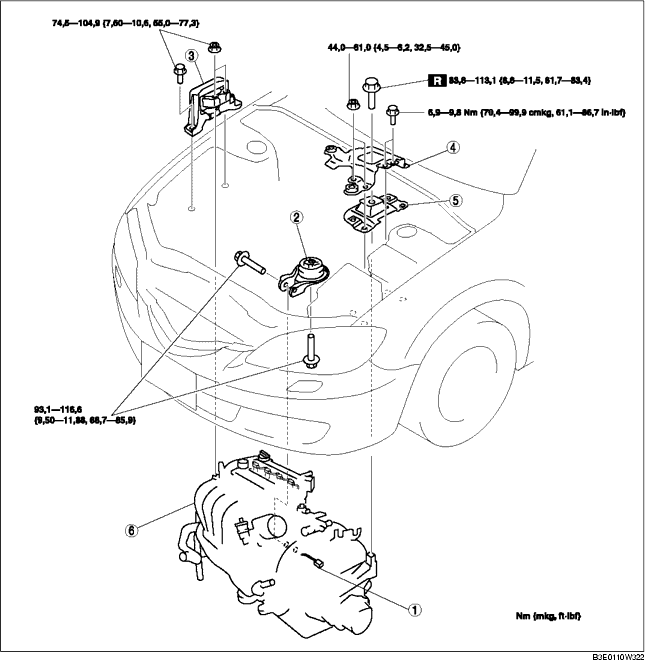

MOTOR AUSBAUEN/EINBAUEN [LF]
B3E011001001W04
-
Vorsicht
-
• Kraftstoffdämpfe sind gefährlich. Sie können sich sehr leicht entzünden und schwere Verletzungen und Schäden verursachen. Funken und offenes Feuer daher stets fernhalten.
-
• Austretender Kraftstoff und Leckstellen in den Kraftstoffleitungen sind gefährlich. Kraftstoff kann sich entzünden und schwere oder tödliche Verletzungen und Schäden verursachen. Außerdem kann Kraftstoff auch Haut- und Augenreizungen hervorrufen. Um dies zu verhindern, stets die "Vorsichtshinweise für Arbeiten an der Kraftstoffanlage" beachten. (Siehe Vorsichtshinweise für Arbeiten an der Kraftstoffanlage.)
1. Den Stopfen entfernen. (Siehe ABDECKPLATTE AUSBAUEN/EINBAUEN [LF].)
2. Den Luftschlauch und den Luftfilter ausbauen. (Siehe LUFTANSAUGSYSTEM AUSBAUEN/EINBAUEN [LF].)
3. Batterieabdeckung, Batterieführung, Batterieklemme, Batterie und Batterieträger ausbauen. (Siehe BATTERIE AUSBAUEN/EINBAUEN [LF].)
4. Den Kraftstoffschlauch lösen. (Siehe RASTKUPPLUNG LÖSEN/ANSCHLIESSEN [ZJ, Z6, LF].)
5. Folgende Bauteile ausbauen.
-
(1) Gaszug- und halterung
-
(2) Vorderräder und Reifen (Siehe ALLGEMEINE VORGEHENSWEISEN (RADAUFHÄNGUNG).)
-
(3) Unterboden und Spritzschutz
-
(4) Klimaanlage-Keilriemen (Siehe KEILRIEMEN AUSTAUSCHEN [LF].)
-
(5) A/C-Kompressor mit angeschlossenen Leitungen
-
Hinweis
-
• Den A/C-Kompressor mit einem Kabel oder Seil so sichern, dass er nicht im Weg ist.
6. Automatikgetriebeöl (AT) oder Getriebeöl (MT) ablassen (Siehe GETRIEBEÖLWECHSEL [F35M-R].) (Siehe WECHSEL DES AUTOMATIKGETRIEBEÖLS.)
7. Das Kühlmittel ablassen (Siehe KÜHLMITTEL WECHSELN.)
8. Den Bremsunterdruckschlauch abklemmen.
9. Folgende Bauteile ausbauen.
-
(1) Strebe (Siehe AUSPUFFANLAGE AUSBAUEN/EINBAUEN [LF].)
-
(2) Fahrschemel, Vorderer Stabilisator, unterer Querlenker, Lenkgetriebe und Gummimotorlager Nr. 1 (Siehe LENKGETRIEBE UND -GESTÄNGE AUSBAUEN/EINBAUEN.)
-
(3) Antriebswellen (Siehe ANTRIEBSWELLE AUSBAUEN/EINBAUEN.)
-
(4) Kühlmittelausgleichsbehälter mit noch angeschlossenem Schlauch
-
(5) Kompletter Kühlerlüfter (Siehe KÜHLER AUSBAUEN/EINBAUEN.)
-
(6) ATF-Schlauch, Wählhebelzug und Kabelbaum (AT) (Siehe AUTOMATIKGETRIEBE AUSBAUEN/EINBAUEN [LF].)
-
(7) Schaltzug (MT) (Siehe SCHALTGETRIEBE AUSBAUEN/EINBAUEN [G35M-R].)
-
(8) Kupplungsnehmerzylinder mit noch angeschlossener Leitung (MT) (Siehe KUPPLUNGSNEHMERZYLINDER AUSBAUEN/EINBAUEN.)
10. Den Heizungsschlauch lösen.
11. Oberen und unteren Kühlerschlauch lösen.
12. Den Hauptschalldämpfer lösen (Siehe AUSPUFFANLAGE AUSBAUEN/EINBAUEN [LF].)
13. Gemäß der Reihenfolge in der Tabelle ausbauen.
14. Der Einbau erfolgt in umgekehrter Reihenfolge.
-
Achtung
-
• Die Befestigungsschraube des Gummimotorlagers Nr. 1 nicht festziehen, bevor die Befestigungsschrauben des Gummimotorlagers Nr. 3 festgezogen werden. (Siehe Einbauhinweis für Motorlager Nr. 3 und Motorgummilager Nr. 4.)
15. Motor anlassen. Und folgende Punkte prüfen und falls erforderlich einstellen.
16. Folgende Punkte prüfen und falls erforderlich einstellen.
-
• Vorderachsgeometrie (Siehe VORDERACHSGEOMETRIE.)
-
• Riemenscheibe und Keilriemen auf Schlag und mangelhaften Kontakt.
-
• Lecks von Motoröl, Kühlmittel, Getriebeöl (Automatik- oder Schaltgetriebe) und Kraftstoff.
-
• Zündzeitpunkt und Leerlaufdrehzahl und Menge an CO, HC. (Siehe MOTOREINSTELLUNGEN [LF].)
-
• Funktion über den Motor angetriebener Nebenverbraucher.
-
Hinweis
-
• Wenn der Motor überholt und im Fahrzeug eingebaut wurde, eine Probefahrt durchführen und prüfen, ob keine ungewöhnlichen Dinge auftreten.

|
1
|
Steckverbinder Hauptsicherungskasten
|
|
2
|
Motorgummilager Nr. 1
|
|
3
|
Motorlager Nr. 3
|
|
4
|
Batteriehalterung
|
|
5
|
Motorgummilager Nr. 4
|
|
6
|
Motor, Getriebe
|
Ausbauhinweis für den Steckverbinder des Hauptsicherungskastens
1. Die Rastkupplung in der gezeigten Reihenfolge lösen.
2. Zum Lösen den Verriegelungshebel hochziehen und den Steckverbinder entfernen.
Ausbauhinweis für Motorlager Nr. 3 und Motorgummilager Nr. 4
1. Den Motor und das Getriebe wie abgebildet mit einem Motorheber und Adapter abstützen.
Einbauhinweis für Motorlager Nr. 3 und Motorgummilager Nr. 4
1. Den Motor und das Getriebe wie abgebildet mit einem Motorheber und Adapter abstützen.
2. Das Motorgummilager Nr. 1 und das Motorgummilager Nr. 4 einbauen.
-
Hinweis
-
• Die Befestigungsschrauben von Motorgummilager Nr. 1 und Nr. 4 in diesem Schritt noch nicht festziehen.
3. Die neue Befestigungsschraube von Motorgummilager Nr. 4 wie abgebildet festziehen.
-
Anzugsmoment
-
83,6-113,1 Nm
-
{8,6-11,5 mkg, 61,7-83,4 ft·lbf}
4. Die Befestigungsschraube und Mutter von Motorgummilager Nr. 4 sowie die Befestigungsschrauben und Muttern der Batterieträgerhalterung wie abgebildet festziehen.
-
Anzugsmoment
-
(1) 44,0-61,0 Nm
-
{4,5-6,2 mkg, 32,5-44,9 ft·lbf}
-
(2) 6,9-9,8 Nm
-
{70,4-99,9 cmkg, 61,1-86,7 in·lbf}
5. Die Stehbolzen des Motorlagers Nr. 3 festziehen.
-
Anzugsmoment
-
7,0-13 Nm
-
{71,4-132,5 cmkg, 62,0-115,0 in·lbf}
6. Die Schrauben und -muttern der Gelenkhalterung des Motorlagers Nr. 3 in der abgebildeten Reihenfolge festziehen.
-
Anzugsmoment
-
74,5-104,9 Nm
-
{7,60-10,6 mkg, 55,0-77,3 ft·lbf}
Einbauhinweis für Motorgummilager Nr. 1
1. Den Motorheber und Adapter entfernen.
2. Die Befestigungsschrauben von Motorgummilager Nr. 1 wie abgebildet festziehen.
-
Anzugsmoment
-
93,1-116,6 Nm
-
{9,50-11,88 mkg, 68,7-85,9 ft·lbf}